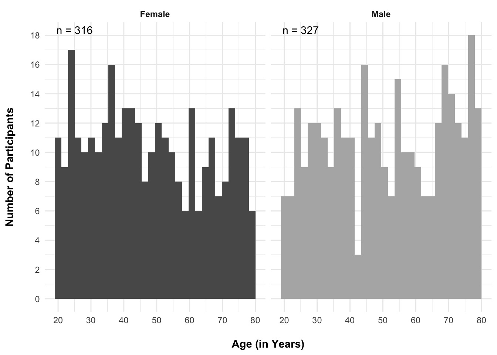
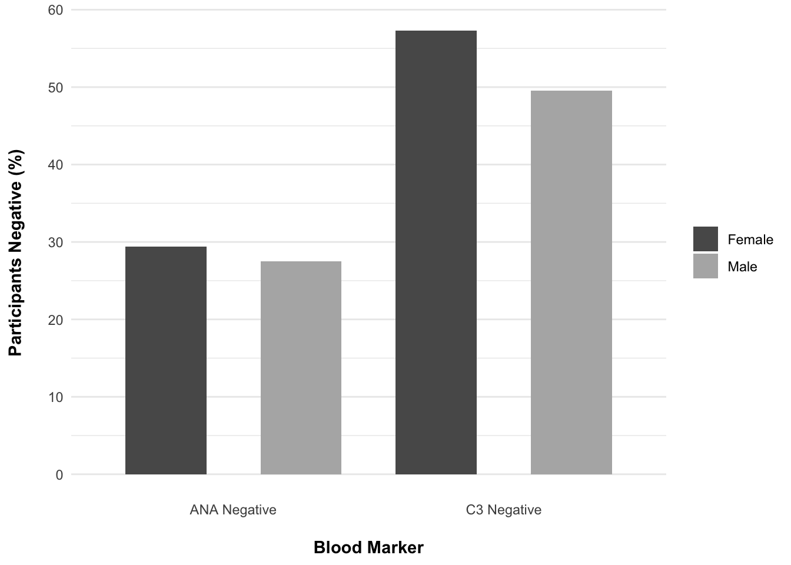
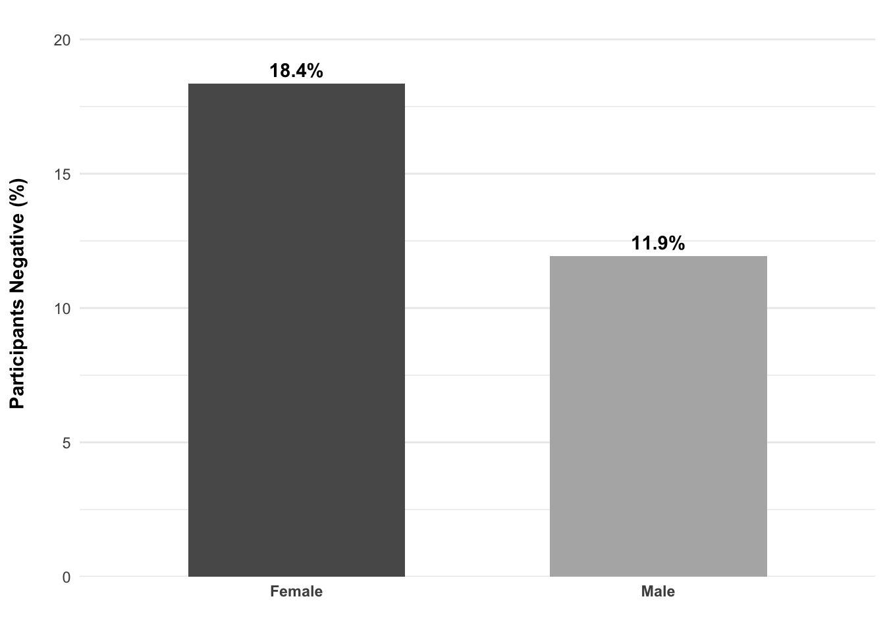
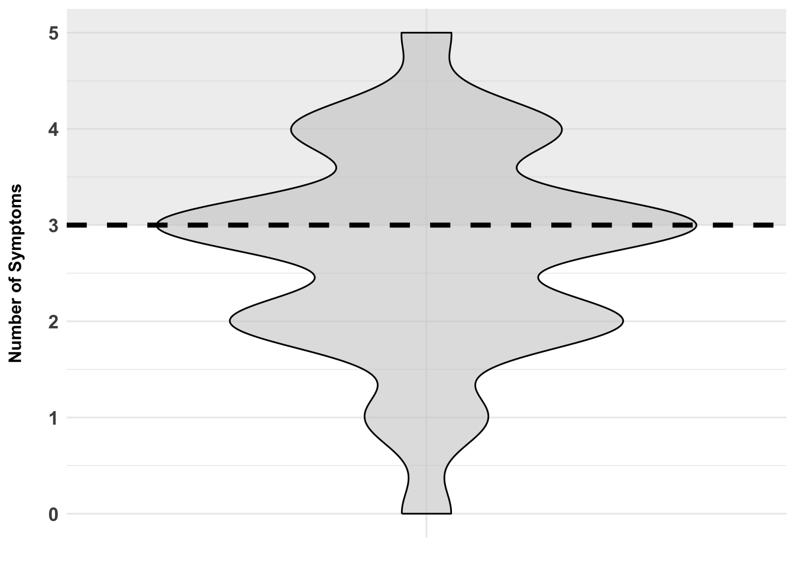

Data Vis Scientific Article Version A
Story Summary
“Great News; Your Labs are Normal!”
Autoimmune diseases are prominent, and blood markers are commonly used to diagnose and monitor disease progression. These markers include Antinuclear Antibodies (ANAs) and Complement Component 3 (C3) (Kraev et al., 2024; Ayano & Horiuchi, 2023). However, a portion of patients with autoimmune diseases do not test positive for these markers (Lenti et al., 2022). Despite not having positive lab results, these individuals who test negative may still be struggling with symptoms. Individuals with real medical concerns, especially women, are too often dismissed with a simple “it’s probably just anxiety”. Because of this, it is important to look at the prevalence of seronegativity in both men and women and examine how these individuals might still be struggling with symptoms.
The graphs in this analysis, together, show a gap between diagnostic markers of autoimmune disease and symptom burden, especially for women. Although men and women were largely equally represented in the sample, women displayed higher rates of seronegativity for both ANA and C3 separately, as well as ANA and C3 combined. Even though around 18% of women with an autoimmune disorder were completely negative for ANA and C3, they still reported a significant number of symptoms. In light of this, it is worth recognizing that ‘normal labs’ do not necessarily tell you about someone’s symptomatic experience with an autoimmune disorder.
Methods
A data set of men and women with autoimmune diseases was sampled from Comprehensive Autoimmune Disorder Dataset (Ragheb, 2024). Analysis and data visualization were carried out in RStudio, and then ggplot2 was used to create figures. Originally, there were 12500 patients included in the dataset. However, in the “Final_Balanced_Autoimmune_Data_Set.csv” version of the dataset, there were significantly fewer unique participant IDs. After removing duplicate IDs from the source file using the unique() R function, there were only 643 observations left. The summarise() function was used to gather information about the data set, including the number of men and women, the percent of participants who were seronegative for ANA and C3.
Participants
In this reduced data set of 643, there were 316 unique female participant, representing 49.1 percent of the total sample. The remaining 50.9 percent of the sample were men ( n = 327). The mean age of the women in the sample was 47.8 years old, and 51.0 years for the male patients. The mean duration of participant’s autoimmune disease was 61.4 and 61.9 months for women and men, respectively.
Figure 1
Participant Age Distribution by Sex
Results
Looking at ANA and C3 serology separately, 29.43 percent of women in the sample were ANA negative, compared to 27.52 percent of men. For C3 specific seronegativity, female participants were 57.28 percent likely to be seronegative, whereas male participants were 49.54 percent likely.
Figure 2
ANA and C3 Seronegativity by Sex

When considering combined ANA and C3 seronegativity, 18.4 percent of the women were negative for both markers, compared to 11.9 percent of men. Together, women with an autoimmune disorder in this sample were 6.5 percent more likely to be completely seronegative than men.
Figure 3
Sex Differences in Combined ANA and C3 Seronegativity

Symptoms of interest for this data set included joint pain, skin rashes, a general feeling of being unwell, chronic fatigue, and a low grade fever. Out of these, the average number of symptoms reported by women was 2.7. The median and mode for the sample were both equal to three. 60.3 percent of women reported at least three out of the five symptoms.
Figure 4
Symptom Burden for Combined ANA and C3 Seronegative Women

Discussion
Although men and women with autoimmune diseases were roughly equal in their representation within the sample, seronegativity for all three markers (ANA, C3, and ANA/C3 combined) was more common in women. Despite being combined seronegative, 60.3 percent of this subset reported clear symptomatic burden, having three or more symptoms.
References
Abdullah Ragheb. (2024). Comprehensive Autoimmune Disorder Dataset [Dataset]. Kaggle. https://doi.org/10.34740/KAGGLE/DSV/9807734
Ayano, M., & Horiuchi, T. (2023). Complement as a Biomarker for Systemic Lupus Erythematosus. Biomolecules, 13(2), 367. https://doi.org/10.3390/biom13020367
Kraev, K., Hristov, B., Uchikov, P., Kraeva, M., Basheva-Kraeva, Y., Valova, S., Koleva-Ivanova, M., Popova-Belova, S., Sandeva, M., Chakarov, D., & Geneva-Popova, M. (2024). Comprehensive Exploration of Antinuclear Antibodies (ANAs): Unveiling Clinical Significance, Associations with Cancer, and the Nuances of Differential Diagnosis in Positive ANA Patients. Diagnostics (Basel, Switzerland), 14(3), 320. https://doi.org/10.3390/diagnostics14030320
Lenti, M. V., Rossi, C. M., Melazzini, F., Gastaldi, M., Bugatti, S., Rotondi, M., Bianchi, P. I., Gentile, A., Chiovato, L., Montecucco, C., Corazza, G. R., & Di Sabatino, A. (2022). Seronegative autoimmune diseases: A challenging diagnosis. Autoimmunity reviews, 21(9), 103143. https://doi.org/10.1016/j.autrev.2022.103143